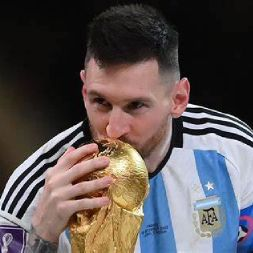
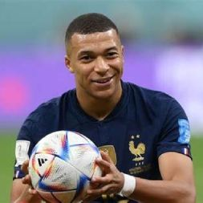

Lionel Messi
Lionel Andrés Messi Cuccittini (Rosario, 24 de junio de 1987), conocido como Leo Messi, es un futbolista argentino que juega como delantero o centrocampista. Desde 2023 integra el plantel del Inter Miami de la MLS canadoestadounidense. Es también internacional con la selección de Argentina, de la que es capitán. Con el Fútbol Club Barcelona, al que estuvo ligado más de veinte años, ganó 35 títulos, entre ellos, diez de La Liga, cuatro de la Liga de Campeones de la UEFA y siete de la Copa del Rey. Considerado con frecuencia el mejor jugador del mundo y uno de los mejores de todos los tiempos, es el único en la historia que ha ganado, entre otras distinciones, ocho veces el Balón de Oro, ocho premios de la FIFA al mejor jugador del mundo, seis Botas de Oro y dos Balones de Oro de la Copa Mundial de Fútbol. En 2020, se convirtió en el primer futbolista y el primer argentino en recibir un premio Laureus y fue incluido en el Dream Team del Balón de Oro.
Kylian Mbappe
Kylian Mbappé Lottin (París, Isla de Francia, Francia, 20 de diciembre de 1998) es un futbolista francés que juega como delantero en el Paris Saint-Germain F. C. de la Ligue 1. Comenzó su carrera con el A. S. Mónaco de la liga francesa, haciendo su debut profesional en 2015, a los 16 años. Con ellos ganó su primer título de la Ligue 1 y participó por primera vez en la Liga de Campeones de la UEFA. Fue reconocido con el premio al Jugador Joven del Año de la Ligue 1 y el premio Golden Boy. En 2017, fichó por el Paris Saint-Germain (PSG) en un préstamo inicial, que se hizo permanente en 2018 en una transferencia por valor de 180 millones de euros más complementos, lo que lo convirtió en el segundo jugador más caro y el jugador joven más caro. Ademas en 2018, a la edad de 18 años, gano la preciada Copa del Mundo con Francia.
Erlin Haland

Erling Braut Haaland (Leeds, Inglaterra, 21 de julio de 2000) es un futbolista noruego que juega como delantero en el Manchester City F. C. de la Premier League de Inglaterra. Prolífico goleador, es reconocido por su ritmo, fuerza y atléticos movimientos con y sin balón, y es frecuentemente considerado como uno de los mejores delanteros de la actualidad, así como uno de los mejores futbolistas jóvenes del mundo.El 5 de septiembre de 2019 debutó con la selección de Noruega en un encuentro de clasificación para la Eurocopa 2020 frente a Malta. Fue galardonado con el Golden Boy de 2020, premio al mejor futbolista del fútbol europeo menor de 21 años, y considerado como el Balón de Oro a los jugadores jóvenes del panorama internacional. Durante la Copa Mundial Sub-20 de la FIFA 2019, ganó la Bota de Oro donde marcó nueve goles en un partido, otro récord, debutó con la selección absoluta de Noruega en septiembre de 2019.
Cristiano Ronaldo

Cristiano Ronaldo dos Santos Aveiro(Funchal, Madeira; 5 de febrero de 1985), es un futbolista portugués. Juega como extremo izquierdo o delantero y su equipo actual es el Al-Nassr F. C. de la Liga Profesional Saudí. Es internacional absoluto con la selección de Portugal, de la cual es capitán, máximo goleador histórico y jugador con más presencias con 206 partidos, logro alcanzado en las eliminatorias para la Eurocopa 2024, reconocido por el Libro Guinness de los récords. Considerado con frecuencia el mejor y más completo futbolista, así como el mayor goleador del mundo, además de uno de los mejores de todos los tiempos.